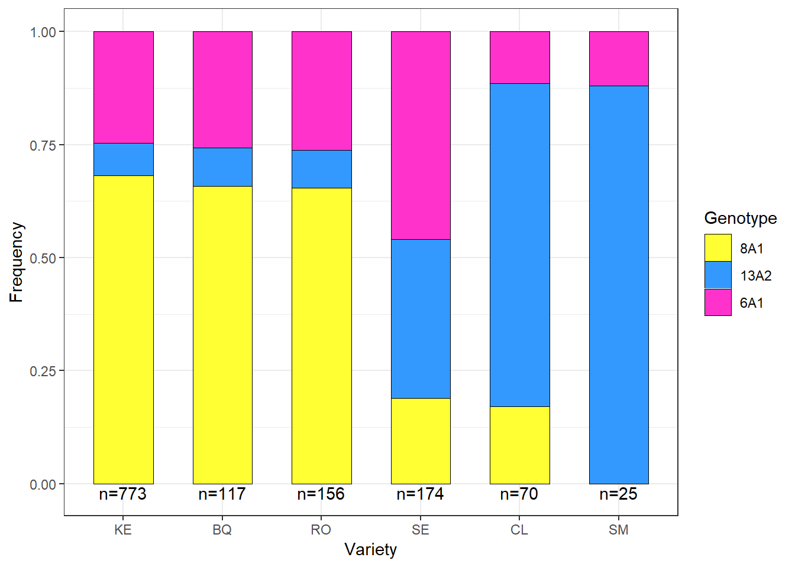

Population Data
Popoulation analysis
Presentation of the sampling and a descriptive analysis of the samples collected.
Load packages
list.of.packages <-
c(
"tidyverse",
"devtools",
"egg",
"tableHTML"
)
new.packages <-
list.of.packages[!(list.of.packages %in% installed.packages()[, "Package"])]
#Download packages that are not already present in the library
if (length(new.packages))
install.packages(new.packages)
packages_load <-
lapply(list.of.packages, require, character.only = TRUE)
#Print warning if there is a problem with installing/loading some of packages
if (any(as.numeric(packages_load) == 0)) {
warning(paste("Package/s: ", paste(list.of.packages[packages_load != TRUE], sep = ", "), "not loaded!"))
} else {
print("All packages were successfully loaded.")
}## [1] "All packages were successfully loaded."rm(list.of.packages, new.packages, packages_load)
#if instal is not working try
#install.packages("package_name", repos = c(CRAN="https://cran.r-project.org/"))Data import
samples <- readRDS(file = here::here("data", "gen data", "final", "gendata.rds") )Sampling dates and number of samples.
samp_dates <-
samples %>%
group_by(year, date) %>%
summarise(`No. of Samples` = n()) %>%
rename(Year = year, Date = date)
write_csv(samp_dates, here::here("results", "gen", "Sampling dates&counts.csv"))
samp_dates %>%
kableExtra::kable()| Year | Date | No. of Samples |
|---|---|---|
| 2016 | 10/6/2016 | 158 |
| 2017 | 12/1/2017 | 28 |
| 2017 | 7/14/2017 | 5 |
| 2017 | 7/20/2017 | 3 |
| 2017 | 7/3/2017 | 12 |
| 2017 | 7/31/2017 | 38 |
| 2017 | 8/10/2017 | 154 |
| 2017 | 8/23/2017 | 138 |
| 2017 | 9/13/2017 | 125 |
| 2018 | 8/20/2018 | 3 |
| 2018 | 8/28/2018 | 7 |
| 2018 | 9/24/2018 | 165 |
| 2018 | 9/5/2018 | 31 |
| 2019 | 8/14/2019 | 250 |
| 2019 | 8/27/2019 | 198 |
s_tab <-
samples %>%
group_by(year,variety, treatment) %>%
summarise(count = n()) %>%
spread(variety, count) %>%
rename(Year = year,
Prog. = treatment) %>%
replace(is.na(.), 0) %>%
ungroup()
write_csv(s_tab, here::here("results", "gen", "Summary of isolates.csv"))
# s_tab %>%
# kable(format = "html") %>%
# kableExtra::kable_styling(latex_options = "striped")
years <-
s_tab %>%
group_by(Year) %>%
summarise(counts =n()) %>%
dplyr::select(counts) %>%
unlist
year_names <- unique(s_tab$Year)
tab <-
dplyr::select(s_tab, -c(Year)) %>%
tableHTML::tableHTML(.,
rownames = FALSE,
row_groups = list(c(years), c(year_names)),
# widths = c(50, 60, 70, rep(40, 6))
) %>%
# add_css_header(css = list('background-color', 'lightgray'), headers = c(1:ncol(s_tab)+1)) %>%
add_css_row(css = list('background-color', 'lightgray'),
rows = c(which(s_tab$Year %in% c(2017, 2019))+1)) %>%
add_theme('scientific')%>%
tableHTML_to_image(.,file =here::here("results", "gen", "Summary of isolates.png"),
type = "png")
rm(years, s_tab)
Table1
The code
# plot successful fin
samples$plotID <- 1
line_size <- 0.13
cbbPalette <- c ("#3399ff", "#ff33cc", "#FDFD8D","#ffff33")
dis_obs <- readRDS(file = here::here("data", "disease", "dis_obs.rds") )
p_dis <-
filter(dis_obs, treatment == "Control") %>%
mutate(treatment = "Control plots") %>%
group_by(treatment, variety, year, julian_day) %>%
summarise(rating = mean(obs)) %>%
ggplot(aes(x = julian_day,
y = rating,
colour = variety,
group = variety)) +
geom_line(aes(y = rating),
size = 0.2,
linetype = "dotted") +
# scale_x_continuous(labels = c())+
scale_y_continuous(limits = c(0, 100))+
geom_line(size = 0.3) +
ylab("Disease rating (%)") +
xlab("Julian day of year") +
labs(colour = "Variety:")+
facet_wrap(~year, ncol = 1)+
theme_article()+
theme(legend.position = "bottom")+
guides(fill=guide_legend(nrow=2,byrow=TRUE),
colour = guide_legend(title.position = "top"))
# remove tuber samples
p_gen <-
filter(samples, julian_day < 300) %>%
ggplot(.,aes(julian_day, fill = Genotype))+
# geom_col(aes(julian_day, plotID, fill = Genotype), width = 5, colour = "black", size = 0.1)+
geom_bar(stat = "count", position = "stack", width = 6,colour = "black", size = line_size)+
facet_wrap(~year, ncol = 1)+
xlab("Date")+
ylab("No. of samples")+
# ggtitle("")+
scale_fill_manual(values=cbbPalette)+
theme_article()+
theme( legend.position = "bottom",
legend.direction = "horizontal")+
guides(fill=guide_legend(nrow=2,byrow=TRUE,title.position = "top"))+
ggsave(filename= here::here("results", "gen", "freq", "Genotype per sampling vertical.png"),
width = 4, height =6, dpi = 620)
p_var <-
filter(samples, julian_day < 300) %>%
ggplot(aes(julian_day, fill = variety))+
geom_bar(stat = "count", position = "stack", width = 6,colour = "black", size = line_size)+
facet_wrap(~year, ncol = 1)+
xlab("Date")+
# ylab("No. of samples")+
ylab("")+
# ggtitle("")+
theme_article()+
# labs(fill = "Variety")+
scale_fill_brewer("Variety:", palette = "Dark2") +
theme(
axis.title.y=element_blank(),
axis.text.y=element_blank(),
legend.position = "bottom",
legend.direction = "horizontal")+
guides(fill=guide_legend(nrow=2,byrow=TRUE,title.position = "top"))+
# theme(panel.grid.major = element_blank(), panel.grid.minor = element_blank(),
# panel.background = element_blank(), axis.line = element_line(colour = "black"))+
ggsave(filename= here::here("results", "gen", "freq", "Samples per date and variety.png"),
width = 3, height = 6, dpi = 620)
#plot samples per treatment
p_trt <-
filter(samples, julian_day < 300) %>%
ggplot(.,aes(julian_day, fill = trt))+
# geom_col(aes(julian_day, plotID, fill = Genotype), width = 5, colour = "black", size = 0.1)+
geom_bar(stat = "count", position = "stack", width = 6,colour = "black", size = line_size)+
facet_wrap(~year, ncol = 1)+
xlab("Date")+
# ylab("No. of samples")+
ylab("")+
scale_fill_brewer("Dose:", palette = "Dark2") +
# ggtitle("")+
# scale_fill_manual(values=cbbPalette)+
theme_article()+
theme(
axis.title.y=element_blank(),
axis.text.y=element_blank(),
legend.position = "bottom",
legend.direction = "horizontal")+
guides(fill=guide_legend(nrow=2,byrow=TRUE,title.position = "top"))+
ggsave(filename= here::here("results", "gen", "freq", "Trt dose per sampling vertical.png"),
width = 4, height =6, dpi = 620)
#plot samples per treatment/fixed reduced dose
p_prog <-
filter(samples, julian_day < 300) %>%
ggplot(.,aes(julian_day, fill = treatment))+
# geom_col(aes(julian_day, plotID, fill = Genotype), width = 5, colour = "black", size = 0.1)+
geom_bar(stat = "count", position = "stack", width = 6,colour = "black", size = line_size)+
facet_wrap(~year, ncol = 1)+
xlab("Date")+
# ylab("No. of samples")+
ylab("")+
scale_fill_brewer("Prog.:", palette = "Dark2") +
# ggtitle("")+
# scale_fill_manual(values=cbbPalette)+
theme_article()+
theme(
axis.title.y=element_blank(),
axis.text.y=element_blank(),
legend.position = "bottom",
legend.direction = "horizontal")+
guides(fill=guide_legend(nrow=2,byrow=TRUE,title.position = "top"))+
ggsave(filename= here::here("results", "gen", "freq", "Treatment dose per sampling vertical.png"),
width = 4, height =6, dpi = 620)
plot_list <- list(p_dis,p_gen, p_var, p_trt, p_prog)
ggpubr::ggarrange(plotlist = plot_list,
widths = c(1,1.15,1,1,1),
# labels = c("r","rr"),
ncol = 5)+
ggsave(filename= here::here("results", "gen", "freq", "G and v sampling vertical.png"),
width = 9.8, height =7, dpi = 620)
GenPalette <- c ("#ffff33", "#3399ff","#ff33cc")
lab_size <- 3
lab_pos_y <- -0.04
gen_prop <-
samples %>%
mutate(Genotype = ifelse(Genotype == "8A1-1", "8A1", Genotype)) %>%
mutate(Genotype = factor(Genotype, levels = c( "8A1","13A2","6A1" ))) %>%
group_by(variety) %>%
count(Genotype, variety) %>%
rename(counts = n) %>%
mutate(prop = prop.table(counts)) %>%
mutate(perc = round(prop * 100,1)) %>%
arrange(desc(variety))
labels <-
samples %>%
mutate(Genotype = ifelse(Genotype == "8A1-1", "8A1", Genotype)) %>%
count( variety) %>%
rename(counts = n) %>%
mutate(prop = prop.table(counts)) %>%
dplyr::select(counts) %>%
sapply( ., function(x) paste0("n=", x )) %>%
as.vector()
f_v <-
ggplot(gen_prop, aes(variety, prop, fill = Genotype)) +
geom_hline(
yintercept = seq(0 , 1, 0.1),
size = 0.2,
alpha = 0.8,
color = "gray",
linetype = "dotted"
)+
geom_bar(stat = "identity",
width = 0.6,
position = position_fill(reverse = TRUE),
color = "black",
size = .1) +
ylab("Frequency") +
xlab("Variety") +
annotate(
geom = "text",
label = labels,
x = unique(gen_prop$variety),
y = lab_pos_y,
size = lab_size
)+
scale_fill_manual(values=GenPalette)+
theme_bw()+
egg::theme_article()+
scale_y_continuous(limits = c(-0.09, 1),
# expand = c(0, 0),
breaks = seq(0, 1, 0.1))+
theme(legend.position = "top",
axis.title.y=element_blank()
)
gen_prop_trt <-
samples %>%
mutate(Genotype = ifelse(Genotype == "8A1-1", "8A1", Genotype)) %>%
mutate(Genotype = factor(Genotype, levels = c( "8A1","13A2","6A1" ))) %>%
group_by(treatment) %>%
count(Genotype, treatment) %>%
rename(counts = n) %>%
mutate(prop = prop.table(counts))%>%
mutate(perc = round(prop * 100,1))
labels <-
samples %>%
mutate(Genotype = ifelse(Genotype == "8A1-1", "8A1", Genotype)) %>%
count(treatment) %>%
rename(counts = n) %>%
mutate(prop = prop.table(counts)) %>%
dplyr::select(counts) %>%
sapply(., function(x)
paste0("n=", x)) %>%
as.vector()
f_t <-
ggplot(gen_prop_trt, aes(treatment, prop, fill = Genotype)) +
geom_hline(
yintercept = seq(0 , 1, 0.1),
size = 0.2,
alpha = 0.8,
color = "gray",
linetype = "dotted"
) +
geom_bar(
stat = "identity",
width = 0.6,
position = position_fill(reverse = TRUE),
color = "black",
size = .1
) +
ylab("Proportion") +
xlab("Treatment") +
annotate(
geom = "text",
label = labels,
x = unique(gen_prop_trt$treatment),
y = lab_pos_y,
size = lab_size
) +
scale_fill_manual(values = GenPalette) +
egg::theme_article() +
scale_y_continuous(limits = c(-0.08, 1),
# expand = c(0, 0),
breaks = seq(0, 1, 0.1)) +
theme(axis.title.y = element_blank(),
legend.position = "none")
#Years
gen_prop_year<-
samples %>%
mutate(Genotype = ifelse(Genotype == "8A1-1", "8A1", Genotype)) %>%
mutate(Genotype = factor(Genotype, levels = c( "8A1","13A2","6A1" ))) %>%
group_by(year) %>%
count(Genotype, year) %>%
rename(counts = n) %>%
mutate(prop = prop.table(counts))%>%
mutate(perc = round(prop * 100,1))
labels <-
samples %>%
mutate(Genotype = ifelse(Genotype == "8A1-1", "8A1", Genotype)) %>%
count( year) %>%
rename(counts = n) %>%
mutate(prop = prop.table(counts)) %>%
dplyr::select(counts) %>%
sapply( ., function(x) paste0("n=", x )) %>%
as.vector()
f_y <-
ggplot(gen_prop_year, aes(year, prop, fill = Genotype)) +
geom_hline(
yintercept = seq(0 , 1, 0.1),
size = 0.2,
alpha = 0.8,
color = "gray",
linetype = "solid"
) +
geom_bar(
stat = "identity",
width = 0.45,
position = position_fill(reverse = TRUE),
color = "black",
size = .1
) +
ylab("Frequency") +
xlab("Year") +
annotate(
geom = "text",
label = labels,
x = unique(gen_prop_year$year),
y = lab_pos_y,
size = lab_size
) +
egg::theme_article() +
scale_y_continuous(
limits = c(-0.09, 1),
# expand = c(0, 0),
breaks = seq(0, 1, 0.1)
) +
scale_fill_manual(values = GenPalette) +
theme(axis.title.y = element_blank(),
legend.position = "none")
plotls <- list(f_v, f_t, f_y)
ggpubr::ggarrange(plotlist = plotls,
heights = c(1.2,1,1),
# labels = c("r","rr"),
nrow = 3)+
ggsave(filename= here::here("results", "gen", "freq", "Freq_all.png"),
width = 2.9, height =9, dpi = 820)
gen_prop %>%
dplyr::select(c(variety, Genotype, perc)) %>%
spread(variety, perc) %>%
lapply(., replace_na, 0) %>% tbl_df()## Warning in `[<-.factor`(`*tmp*`, !is_complete(data), value = 0): invalid
## factor level, NA generatedgen_prop_trt %>%
dplyr::select(c(treatment, Genotype, perc)) %>%
spread(treatment, perc) %>%
kableExtra::kable()| Genotype | 0 | 100 | 50 | IR | BM | MIR |
|---|---|---|---|---|---|---|
| 8A1 | 58.2 | 45.2 | 48.5 | 62.3 | 55.3 | 65.6 |
| 13A2 | 15.6 | 24.4 | 23.9 | 15.0 | 8.7 | 11.3 |
| 6A1 | 26.3 | 30.4 | 27.6 | 22.7 | 36.0 | 23.2 |
gen_prop_year %>%
dplyr::select(c(year, Genotype, perc)) %>%
spread(year, perc) %>%
kableExtra::kable()| Genotype | 2016 | 2017 | 2018 | 2019 |
|---|---|---|---|---|
| 8A1 | 34.2 | 53.9 | 90.3 | 53.6 |
| 13A2 | 46.8 | 4.0 | 1.0 | 25.7 |
| 6A1 | 19.0 | 42.1 | 8.7 | 20.8 |